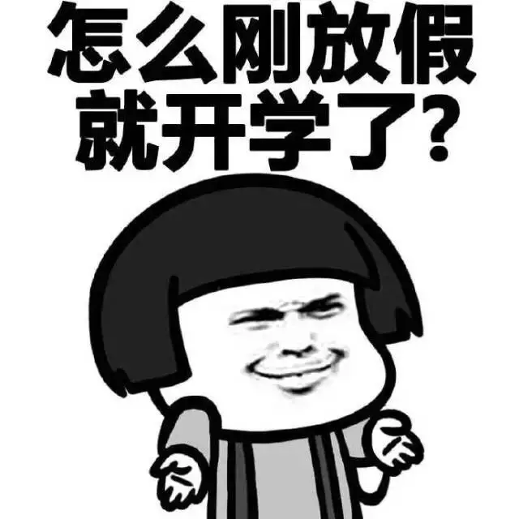
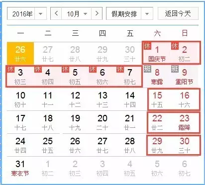
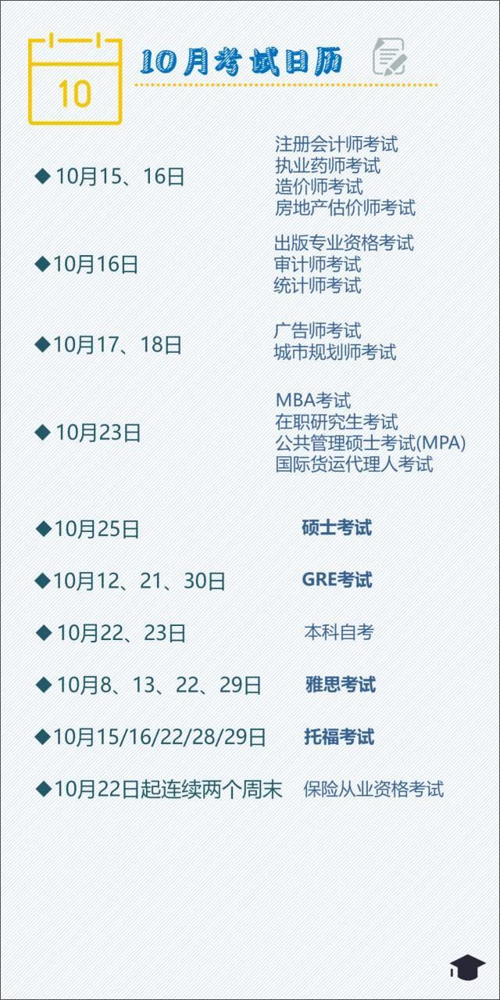
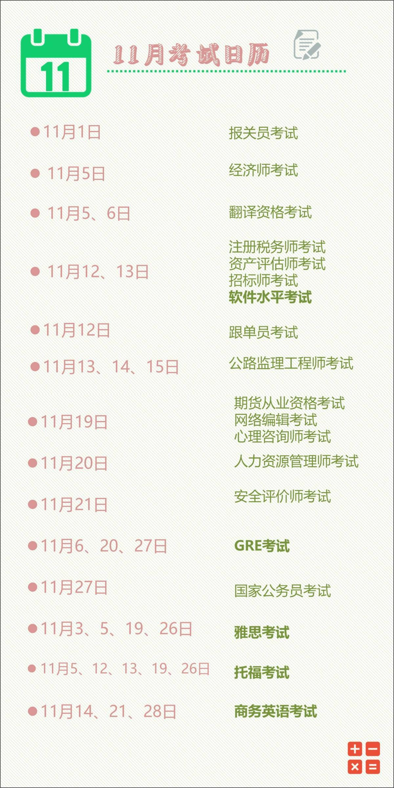
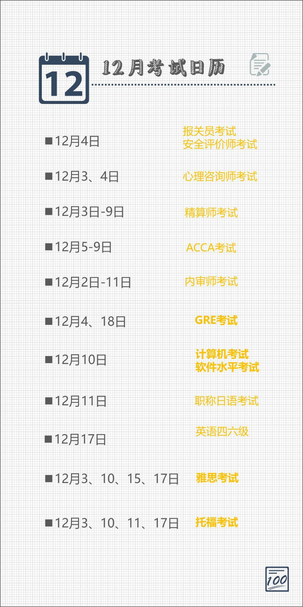

使用小程序
今天的你会想：

10月都放假13天了，你还有什么不满？

哦对，之后的假期就是元旦了……
海明威曾在《流动的盛宴》中写道：
那时候我就明白，不论是好事还是坏事，一旦结束，总会让人感到空虚。如果是坏事，这空虚感会自行消失；而如果是好事，你无法填补这空虚，除非发生更好的事。
意思是，你需要更好的事情来填补放假结束空虚的心灵：
我知道，1秒钟不学习你就浑身难受，何况过了国庆7天长假呢？
那么，在仅剩下两个月就结束的2016年里，有哪些考试可以供我们学习呢？



我听过的最浪漫的话，大概就是：
一起考试吗？
好了我去学习了(●'◡'●)